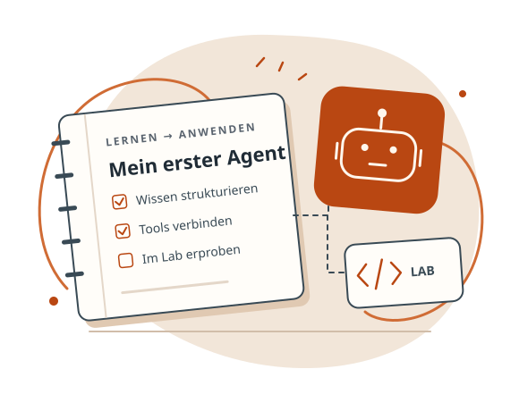

Copilot Studio · AB-620 · Lernplattform
KI-Agenten bauen.
AB-620 vorbereiten.
Vom Konzept zum integrierten Agenten: Lernen Sie gezielt, setzen Sie Ihr Wissen in praktischen Labs um und üben Sie für die Zertifizierungsprüfung.
Für Architektur, Engineering und Power-Platform-Entwicklung.
Unabhängiges Lernangebot · Hinweise zu Quellen & Qualität
157 Lerninhaltein drei Prüfungsdomänen
20 Hands-on Labsam durchgängigen Contoso-Szenario
Prüfungssimulatormit 75 Übungsfragen im Pool
01 · Wissen aufbauen
Ihr Lernpfad für AB-620
Lernen Sie entlang der drei Prüfungsdomänen: 157 Lerninhalte mit Quellenlinks, gegliedert in 19 Unterthemen. Öffnen Sie eine Domäne und starten Sie die geführten Lernkarten. Mit der Suche finden Sie gezielt Themen wie Authentifizierung, Konnektoren oder Sicherheitsrichtlinien.
02 · In die Praxis gehen
Hands-on Labs
Theorie allein reicht für AB-620 nicht aus. In dieser Lernstrecke bauen Sie einen durchgängigen Contoso Service Operations Agent: von Identität und Gesprächsdesign über Tools und Multi-Agent-Orchestrierung bis zu Telemetrie, Evaluation und sicherem Betrieb. Die Roadmap ordnet 20 verbundene Labs in acht Themenblöcke; die interaktiven Lab-Karten darunter zeigen die aktuell verfügbaren Schritt-für-Schritt-Anleitungen und behalten ihre Abhängigkeiten sichtbar im Blick.
Kursarchitektur · 20 Labs · 8 Blöcke
Vom ersten Login zum beobachtbaren Produktionsagenten
Jeder Block liefert eine belastbare Grundlage für den nächsten. Arbeiten Sie von links nach rechts beziehungsweise von oben nach unten; ein abgeschlossener Block ist ein guter Checkpoint, bevor Sie die nächste Ebene des Contoso-Szenarios erweitern.
-
01
Identität & Zugriff
Labs 01–02 · SSO, OBO und sichere Benutzerkontexte
Startpunkt - 02
Gesprächsdesign
Labs 03–05 · Topics, Variablen und Adaptive Cards
nach 01 - 03
Wissen & Grounding
Labs 06–08 · Quellen, Suche und Antwortqualität
nach 02 - 04
Aktionen & Tools
Labs 09–11 · Flows, REST-Konnektor und Parameter
nach 02–03 - 05
Orchestrierung
Labs 12–14 · Router, Unteragenten und A2A
nach 03–04 - 06
Governance & ALM
Labs 15–16 · DLP, Lösungen und kontrollierte Releases
nach 01–05 - 07
Test & Qualität
Labs 17–18 · Regressionen, Golden Dataset und Evaluation
nach 04–06 - 08
Telemetry & Betrieb
Labs 19–20 · KQL, Analytics und kontinuierliche Verbesserung
Abschluss-Checkpoint
03 · Wissen überprüfen
Bereit für die Prüfung?
Simulieren Sie die echte Prüfungssituation: zufällig ausgewählte Fragen aus einem Pool von 75, ein striktes Zeitlimit und kein Sofort-Feedback zu einzelnen Antworten – die Auswertung inklusive Domänen-Analyse erfolgt erst am Ende.
- Fragenanzahl
- 30 Fragenaus Pool von 75
- Zeitlimit
- 45 MinutenCountdown sichtbar
- Bestehensgrenze
- 700 / 1000 Punkten≈ 70 % korrekt
Transparent lernen
Quellen & Qualität
Dieses unabhängige Lernangebot unterstützt Ihre Vorbereitung. Quellenlinks helfen beim Nachlesen; sie sind kein Nachweis einer fachlichen Prüfung oder einer Freigabe durch Microsoft.
| Bereich | Status | Was das bedeutet |
|---|---|---|
| Lerninhalte & Referenzen | Quellen verlinkt | Lernkarten und Labs verweisen auf Microsoft Learn. Vollständigkeit, Aktualität und fachliche Richtigkeit sind damit nicht unabhängig bestätigt. |
| Prüfungstraining | Übungsmaterial | Die Fragen dienen der Vorbereitung; sie sind keine offiziellen Prüfungsfragen. Das Simulationsergebnis garantiert kein Bestehen. |
| Technische Qualität | Keine Gesamtfreigabe | Einzelne Funktions- oder Darstellungstests ersetzen keine vollständige Prüfung aller Browser, Inhalte und Bedienhilfen. Diese Tabelle ist kein automatisierter Live-Testbericht. |
| Barrierefreiheit & Darstellung | Prüfung nicht abgeschlossen | Farbschemata, Tastaturbedienung und responsive Ansichten sind vorgesehen. Eine umfassende WCAG-Konformitätsprüfung steht aus. |
Zur Einordnung: Die Plattform wurde mit Unterstützung von KI-Agenten erstellt. Prüfen Sie wichtige fachliche Aussagen anhand der verlinkten Dokumentation und orientieren Sie Ihre Prüfungsvorbereitung am aktuellen offiziellen Study Guide.